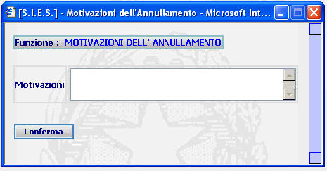

ANNULLAMENTO RICORSO: La funzione consente di annullare un ricorso precedentemente iscritto.
LE MASCHERE VIDEO
La funzione viene realizzata attraverso la maschera seguente:

COME FARE PER ...
Annullare un ricorso precedentemente iscritto:
CAMPI
I campi da compilare sono i seguenti:
| Motivazioni | Campo nel quale va inserito il motivo che determina l'annullamento del ricorso |
PULSANTI
La presente maschera non prevede alcun pulsante
BOTTONI
E' presente il seguente bottone:
|
COMANDI |
DESCRIZIONE |
|
|
A fronte di tale comando, il sistema, annulla il ricorso. |
CONTROLLI
Il sistema non effettua alcun controllo